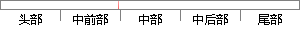

谷歌将在谷歌浏览器Chrome上推出“小程序”增强型网页应用（ Progressive Web Apps，简称 PWAs），是目前正处于测试版的Chrome 57新增的功能。
片段位置图

相似结果|
1
原句片段：谷歌将在谷歌浏览器Chrome上推出“小程序”增强型网页应用（ Progressive Web Apps，简称 PWAs），是目前正处于测试版的Chrome 57新增的功能。
相似片段 1：在微信推出“小程序”后,谷歌也准备这么做了,将在谷歌浏览器Chrome上推出。 谷歌的“小程序”名叫增强型网页应用( Progressive Web Apps,简称 PWAs)...
相似片段 2：在微信推出“小程序”后,谷歌也准备这么做了,将在谷歌浏览器Chrome上推出。 谷歌的“小程序”名叫增强型网页应用( Progressive Web Apps,简称 PWAs)...
相似片段 3：在微信推出“小程序”后,谷歌也准备这么做了,将在谷歌浏览器Chrome上推出。 谷歌的“小程序”名叫增强型网页应用( Progressive Web Apps,简称 PWAs)...
相似片段 4：在微信推出“小程序”后,谷歌也准备这么做了,将在谷歌浏览器Chrome上推出。 谷歌的“小程序”名叫增强型网页应用( Progressive Web Apps,简称PWAs),...
相似片段 5：在微信推出小程序”后,谷歌也准备这么做了,将在谷歌浏览器Chrome上推出。谷歌的小程序”名叫增强型网页应用(ProgressiveWebApps,简称PWAs),是目前正处...
|
※ 片段修改建议 ※
近似词参考：- 谷歌：google
- 谷歌：google
- 程序：法式 步伐
- 应用：利用 运用
- 目前：今朝 现在
- 功能：功效
系统自动生成语句：google将在google浏览器Chrome上推出“小法式”增强型网页利用（ Progressive Web Apps，简称 PWAs），是今朝正处于测试版的Chrome 57新增的功效。
注：本片段修改建议为系统自动生成，仅供参考。